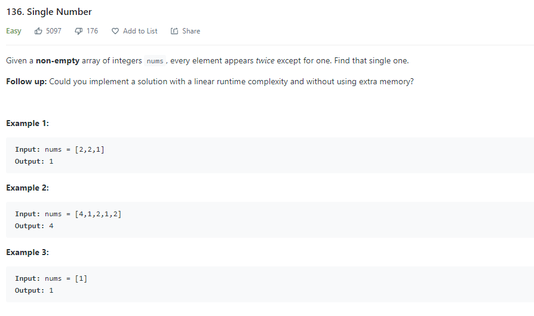

Title: Bit Operation
Date: 2020-10-18
Author: Linz
Bit Operation
Sample Bit Operation
Remove last 1 in the binary number
n&(n-1)
Example: Check a number is 2^n:
2^0 = 1 = 0b0001
2^1 = 2 = 0b0010
2^2 = 4 = 0b0100
bool isPowerOfTwo(int n) {
if (n <= 0) return false;
return (n & (n - 1)) == 0;
}
Find unique number
| a | b | a^b |
|---|---|---|
| 1 | 0 | 1 |
| 0 | 1 | 1 |
| 1 | 1 | 0 |
| 0 | 0 | 0 |
XOR: all numbes that appear twice will produce a 0 by XOR operation. Only the number that appear once will be the in the result.
int singleNumber(vector<int>& nums) {
int res = 0;
for (int n : nums) {
res ^= n;
}
return res;
}
Exchange two number
x = 5, y = 6
x = x ^ y
y = x ^ y
x = x ^ y
Output:
x = 6, x = 5
Reason: y = (x ^ y) ^ y --> y = x ^ (y ^ y) = x
x = (x ^ y) ^ x ^ (y ^ y) --> (x ^ x) ^ y ^ (y ^ y) = y
Letter Case
Base on ASCII
To lower Case
('a' | ' ') = 'a'
('A' | ' ') = 'a'
To Upper Case
('b' & '_') = 'B'
('B' & '_') = 'B'
Upper to Lower | Lower to Upper
('d' ^ ' ') = 'D'
('D' ^ ' ') = 'd'
Int Sign
int x = -1, y = 2;
bool f = ((x ^ y) < 0); // true
int x = 3, y = 2;
bool f = ((x ^ y) < 0); // false